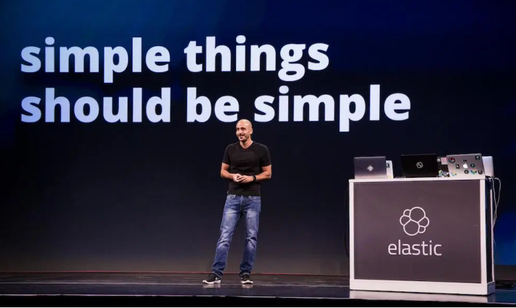
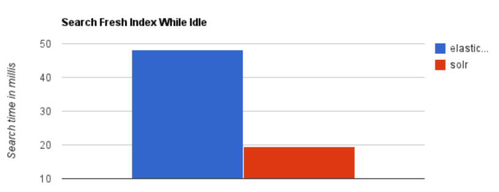
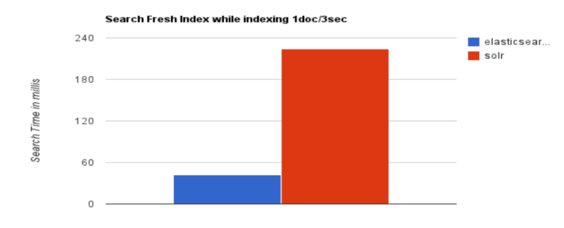
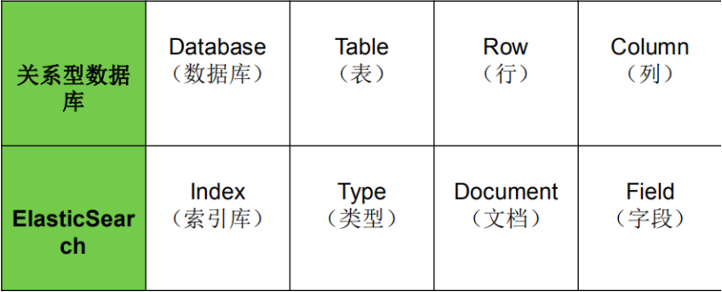
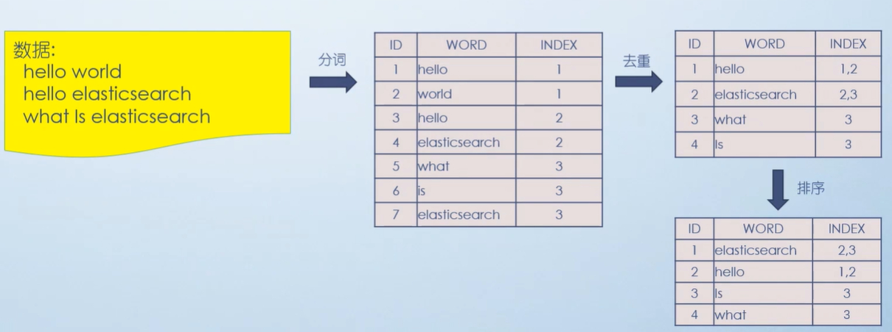

1.ElasticSearch简介
1.1 ElasticSearch（简称ES）
Elasticsearch是用Java开发并且是当前最流行的开源的企业级搜索引擎。
能够达到实时搜索，稳定，可靠，快速，安装使用方便。
客户端支持Java、.NET（C#）、PHP、Python、Ruby等多种语言。
官方网站: https://www.elastic.co/
下载地址：https://www.elastic.co/cn/start
创始人:Shay Banon（谢巴农）

应用场景
- 搜索引擎
- 全文检索
- 站内搜索
- …
1.2 ElasticSearch与Lucene的关系
Lucene可以被认为是迄今为止最先进、性能最好的、功能最全的搜索引擎库（框架）
但是想要使用Lucene，必须使用Java来作为开发语言并将其直接集成到你的应用中，并且Lucene的配置及使用非常复杂，你需要深入了解检索的相关知识来理解它是如何工作的。
Lucene缺点：
1）只能在Java项目中使用,并且要以jar包的方式直接集成项目中.
2）使用非常复杂-创建索引和搜索索引代码繁杂
3）不支持集群环境-索引数据不同步（不支持大型项目）
4）索引数据如果太多就不行，索引库和应用所在同一个服务器,共同占用硬盘.共用空间少.
上述Lucene框架中的缺点,ES全部都能解决.
1.3 ES vs Solr比较
1.3.1 ES vs Solr 检索速度
当单纯的对已有数据进行搜索时，Solr更快。

当实时建立索引时, Solr会产生io阻塞，查询性能较差, Elasticsearch具有明显的优势。

大型互联网公司，实际生产环境测试，将搜索引擎从Solr转到 Elasticsearch以后的平均查询速度有了50倍的提升。

总结：
二者安装都很简单。
1、Solr 利用 Zookeeper 进行分布式管理，而Elasticsearch 自身带有分布式协调管理功能。
2、Solr 支持更多格式的数据，比如JSON、XML、CSV，而 Elasticsearch 仅支持json文件格式。
3、Solr 在传统的搜索应用中表现好于 Elasticsearch，但在处理实时搜索应用时效率明显低于 Elasticsearch。
4、Solr 是传统搜索应用的有力解决方案，但 Elasticsearch更适用于新兴的实时搜索应用。
1.3.2 ES vs 关系型数据库

2. Lucene全文检索框架
2.1 什么是全文检索
全文检索是指：
- 通过一个程序扫描文本中的每一个单词，针对单词建立索引，并保存该单词在文本中的位置、以及出现的次数
- 用户查询时，通过之前建立好的索引来查询，将索引中单词对应的文本位置、出现的次数返回给用户，因为有了具体文本的位置，所以就可以将具体内容读取出来了
hello what world ====> hello
what
world
2.2 分词原理之倒排索引

倒排索引总结：
索引就类似于目录，平时我们使用的都是索引，都是通过主键定位到某条数据，那么倒排索引呢，刚好相反，数据对应到主键．这里以一个博客文章的内容为例:
1.索引
| 文章ID | 文章标题 | 文章内容 |
|---|---|---|
| 1 | 浅析JAVA设计模式 | JAVA设计模式是每一个JAVA程序员都应该掌握的进阶知识 |
| 2 | JAVA多线程设计模式 | JAVA多线程与设计模式结合 |
2.倒排索引
假如，我们有一个站内搜索的功能，通过某个关键词来搜索相关的文章，那么这个关键词可能出现在标题中，也可能出现在文章内容中，那我们将会在创建或修改文章的时候，建立一个关键词与文章的对应关系表，这种，我们可以称之为倒排索引,因此倒排索引，也可称之为反向索引．如：
| 关键词 | 文章ID |
|---|---|
| JAVA | 1 |
| 设计模式 | 1,2 |
| 多线程 | 2 |
注：这里涉及中文分词的问题
3. Elasticsearch中的核心概念
3.1 索引 index
一个索引就是一个拥有几分相似特征的文档的集合。比如说，可以有一个客户数据的索引，另一个产品目录的索引，还有一个订单数据的索引
一个索引由一个名字来标识（必须全部是小写字母的），并且当我们要对对应于这个索引中的文档进行索引、搜索、更新和删除的时候，都要使用到这个名字
3.2 映射 mapping
ElasticSearch中的映射（Mapping）用来定义一个文档
mapping是处理数据的方式和规则方面做一些限制，如某个字段的数据类型、默认值、分词器、是否被索引等等，这些都是映射里面可以设置的
3.3 字段Field
相当于是数据表的字段|列
3.4 字段类型 Type
每一个字段都应该有一个对应的类型，例如：Text、Keyword、Byte等
3.5 文档 document
一个文档是一个可被索引的基础信息单元，类似一条记录。文档以JSON（Javascript Object Notation）格式来表示；
3.6 集群 cluster
一个集群就是由一个或多个节点组织在一起，它们共同持有整个的数据，并一起提供索引和搜索功能
3.7 节点 node
一个节点是集群中的一个服务器，作为集群的一部分，它存储数据，参与集群的索引和搜索功能
一个节点可以通过配置集群名称的方式来加入一个指定的集群。默认情况下，每个节点都会被安排加入到一个叫做“elasticsearch”的集群中
这意味着，如果在网络中启动了若干个节点，并假定它们能够相互发现彼此，它们将会自动地形成并加入到一个叫做“elasticsearch”的集群中
在一个集群里，可以拥有任意多个节点。而且，如果当前网络中没有运行任何Elasticsearch节点，这时启动一个节点，会默认创建并加入一个叫做“elasticsearch”的集群。
3.8 分片和副本 shards&replicas
3.8.1 分片
一个索引可以存储超出单个结点硬件限制的大量数据。比如，一个具有10亿文档的索引占据1TB的磁盘空间，而任一节点都没有这样大的磁盘空间；或者单个节点处理搜索请求，响应太慢
为了解决这个问题，Elasticsearch提供了将索引划分成多份的能力，这些份就叫做分片
当创建一个索引的时候，可以指定你想要的分片的数量
每个分片本身也是一个功能完善并且独立的“索引”，这个“索引”可以被放置到集群中的任何节点上
分片很重要，主要有两方面的原因
允许水平分割/扩展你的内容容量
允许在分片之上进行分布式的、并行的操作，进而提高性能/吞吐量
- 至于一个分片怎样分布，它的文档怎样聚合回搜索请求，是完全由Elasticsearch管理的，对于作为用户来说，这些都是透明的
3.8.2 副本
- 在一个网络/云的环境里，失败随时都可能发生，在某个分片/节点不知怎么的就处于离线状态，或者由于任何原因消失了，这种情况下，有一个故障转移机制是非常有用并且是强烈推荐的。为此目的，Elasticsearch允许你创建分片的一份或多份拷贝，这些拷贝叫做副本分片，或者直接叫副本
- 副本之所以重要，有两个主要原因
- 在分片/节点失败的情况下，提供了高可用性。注意到复制分片从不与原/主要（original/primary）分片置于同一节点上是非常重要的
- 扩展搜索量/吞吐量，因为搜索可以在所有的副本上并行运行，每个索引可以被分成多个分片。一个索引有0个或者多个副本，一旦设置了副本，每个索引就有了主分片和副本分片，分片和副本的数量可以在索引，创建的时候指定。在索引创建之后，可以在任何时候动态地改变副本的数量，但是不能改变分片的数量
4. 安装Elasticsearch
4.1 安装Elasticsearch
4.1.1 创建普通用户
ES不能使用root用户来启动，必须使用普通用户来安装启动。这里我们创建一个普通用户以及定义一些常规目录用于存放我们的数据文件以及安装包等。
创建一个es专门的用户（必须）
# 使用root用户在服务器执行以下命令
1 | 先创建组, 再创建用户: |
4.1.2 上传压缩包并解压
将es的安装包下载并上传到服务器的/user/local/es路径下，然后进行解压
使用sunfy用户来执行以下操作，将es安装包上传到指定服务器，并使用es用户执行以下命令解压。
1 | 解压Elasticsearch |
4.1.3 修改配置文件
4.1.3.1 修改elasticsearch.yml
进入服务器使用sunfy用户来修改配置文件
1 | cd /usr/local/es/elasticsearch-7.6.1/config |
4.1.3.2 修改jvm.option
修改jvm.option配置文件，调整jvm堆内存大小
node1.sunfy.cn使用sunfy用户执行以下命令调整jvm堆内存大小，每个人根据自己服务器的内存大小来进行调整。
1 | cd /usr/local/es/elasticsearch-7.6.1/config |
4.2 修改系统配置，解决启动时候的问题
由于现在使用普通用户来安装es服务，且es服务对服务器的资源要求比较多，包括内存大小，线程数等。所以我们需要给普通用户解开资源的束缚
4.2.1 普通用户打开文件的最大数限制
问题错误信息描述：
max file descriptors [4096] for elasticsearch process likely too low, increase to at least [65536]
ES因为需要大量的创建索引文件，需要大量的打开系统的文件，所以我们需要解除linux系统当中打开文件最大数目的限制，不然ES启动就会抛错
三台机器使用sunfy用户执行以下命令解除打开文件数据的限制
1 | sudo vi /etc/security/limits.conf |
添加如下内容: 注意*不要去掉了
1 | * soft nofile 65536 |
4.2.2 此文件修改后需要重新登录用户，才会生效
普通用户启动线程数限制
问题错误信息描述
max number of threads [1024] for user [es] likely too low, increase to at least [4096]
修改普通用户可以创建的最大线程数
max number of threads [1024] for user [es] likely too low, increase to at least [4096]原因：无法创建本地线程问题,用户最大可创建线程数太小解决方案：修改90-nproc.conf 配置文件。
三台机器使用sunfy用户执行以下命令修改配置文件
1 | Centos6 |
找到如下内容：
1 | * soft nproc 1024#修改为 |
4.2.3 普通用户调大虚拟内存
错误信息描述：
max virtual memory areas vm.max_map_count [65530] likely too low, increase to at least [262144]
调大系统的虚拟内存
原因：最大虚拟内存太小
每次启动机器都手动执行下。
三台机器执行以下命令
备注：以上三个问题解决完成之后，重新连接secureCRT或者重新连接xshell生效编辑 /etc/sysctl.conf，追加以下内容：vm.max_map_count=262144 保存后，执行：sysctl -p
4.3 启动ES服务
三台机器使用sunfy用户执行以下命令启动es服务
nohup /usr/local/es/elasticsearch-7.6.1/bin/elasticsearch 2>&1 &
后台启动ES 进入bin目录 ./elasticsearch -d
启动成功之后jsp即可看到es的服务进程，并且访问页面
能够看到es启动之后的一些信息
注意：如果哪一台机器服务启动失败，那么就到哪一台机器的
/usr/local/es/elasticsearch-7.6.1/log
这个路径下面去查看错误日志
1 | 关闭Linux防火墙 |
注意:启动ES的时候出现 Permission denied
原因：当前的用户没有对XX文件或目录的操作权限
5 客户端Kibana安装
5.1客户端可以分为图形界面客户端,和代码客户端.
5.2 ES主流客户端Kibana，开放9200端口与图形界面客户端交互
1 | 1)下载Kibana放之/usr/local/es目录中 |
6 安装IK分词器
我们后续也需要使用Elasticsearch来进行中文分词，所以需要单独给Elasticsearch安装IK分词器插件。以下为具体安装步骤：
6.1 下载Elasticsearch IK分词器
6.2 切换到sunfy用户，并在es的安装目录下/plugins创建ik
mkdir -p /usr/local/es/elasticsearch-7.6.1/plugins/ik
6.3 将下载的ik分词器上传并解压到该目录
cd /usr/local/es/elasticsearch-7.6.1/plugins/ik unzip elasticsearch-analysis-ik-7.6.1.zip
6.4 重启Elasticsearch
6.5 测试分词效果
1 | POST _analyze |
1 | POST _analyze |
1 | POST _analyze |
7、指定IK分词器作为默认分词器
ES的默认分词设置是standard，这个在中文分词时就比较尴尬了，会单字拆分，比如我搜索关键词“清华大学”，这时候会按“清”，“华”，“大”，“学”去分词，然后搜出来的都是些“清清的河水”，“中华儿女”，“地大物博”，“学而不思则罔”之类的莫名其妙的结果，这里我们就想把这个分词方式修改一下，于是呢，就想到了ik分词器，有两种ik_smart和ik_max_word。
ik_smart会将“清华大学”整个分为一个词，而ik_max_word会将“清华大学”分为“清华大学”，“清华”和“大学”，按需选其中之一就可以了。
修改默认分词方法(这里修改school_index索引的默认分词为：ik_max_word)：
1 | PUT /school_index |
8.ES数据管理
8.1 ES数据管理概述
ES是面向文档(document oriented)的，这意味着它可以存储整个对象或文档(document)。
然而它不仅仅是存储，还会索引(index)每个文档的内容使之可以被搜索。
在ES中，你可以对文档（而非成行成列的数据）进行索引、搜索、排序、过滤。
ES使用JSON作为文档序列化格式。
JSON现在已经被大多语言所支持，而且已经成为NoSQL领域的标准格式。
ES存储的一个员工文档的格式示例：
1 | { |
8.2 基本操作
1) 创建索引
格式: PUT /索引名称
举例: PUT /es_db
2) 查询索引
格式: GET /索引名称
举例: GET /es_db
3) 删除索引
格式: DELETE /索引名称
举例: DELETE /es_db
4) 添加文档
格式: PUT /索引名称/类型/id
5) 修改文档
格式: PUT /索引名称/类型/id
注意:POST和PUT都能起到创建/更新的作用
- 需要注意的是==PUT==需要对一个具体的资源进行操作也就是要确定id才能进行==更新/创建，而==POST==是可以针对整个资源集合进行操作的，如果不写id就由ES生成一个唯一id进行==创建==新文档，如果填了id那就针对这个id的文档进行创建/更新
- PUT只会将json数据都进行替换, POST只会更新相同字段的值
- PUT与DELETE都是幂等性操作, 即不论操作多少次, 结果都一样
6) 查询文档
格式: GET /索引名称/类型/id
举例: GET /es_db/_doc/1
7) 删除文档
格式: DELETE /索引名称/类型/id
举例: DELETE /es_db/_doc/1
9.Restful认识
Restful是一种面向资源的架构风格，可以简单理解为：使用URL定位资源，用HTTP动词（GET,POST,DELETE,PUT）描述操作。 基于Restful API ES和所有客户端的交互都是使用JSON格式的数据.
其他所有程序语言都可以使用RESTful API，通过9200端口的与ES进行通信
GET查询
PUT添加
POST修改
DELE删除
使用Restful的好处：
透明性，暴露资源存在。
充分利用 HTTP 协议本身语义，不同请求方式进行不同的操作
10.查询操作
10.1 查询当前类型中的所有文档 _search
格式: GET /索引名称/类型/_search 举例: GET /es_db/_doc/_search SQL: select * from student
10.2 条件查询, 如要查询age等于28岁的 _search?q=:**
格式: GET /索引名称/类型/_search?q=:** 举例: GET /es_db/_doc/_search?q=age:28 SQL: select * from student where age = 28
10.3 范围查询, 如要查询age在25至26岁之间的 _search?q=*[ TO **] 注意: TO 必须为大写
格式: GET /索引名称/类型/_search?q=**[25 TO 26] 举例: GET /es_db/_doc/_search?q=age[25 TO 26] SQL: select from student where age between 25 and 26
10.4 根据多个ID进行批量查询 _mget
格式: GET /索引名称/类型/_mget 举例: GET /es_db/_doc/_mget { “ids”:[“1”,”2”] } SQL: select * from student where id in (1,2)
10.5 查询年龄小于等于28岁的 :<=
格式: GET /索引名称/类型/_search?q=age:<=* 举例: GET /es_db/_doc/_search?q=age:<=28 SQL: select from student where age <= 28
10.6 查询年龄大于28前的 :>
格式: GET /索引名称/类型/_search?q=age:>* 举例: GET /es_db/_doc/_search?q=age:>28 SQL: select from student where age > 28
10.7 分页查询 from=&size=
格式: GET /索引名称/类型/_search?q=age[25 TO 26]&from=0&size=1 举例: GET /es_db/_doc/_search?q=age[25 TO 26]&from=0&size=1 SQL: select * from student where age between 25 and 26 limit 0, 1
10.8 对查询结果只输出某些字段 _source=字段,字段
格式: GET /索引名称/类型/_search?_source=字段,字段 举例: GET /es_db/_doc/_search?_source=name,age SQL: select name,age from student
10.9 对查询结果排序 sort=字段:desc/asc
格式: GET /索引名称/类型/_search?sort=字段 desc 举例: GET /es_db/_doc/_search?sort=age:desc SQL: select * from student order by age desc

...
...
Copyright 2021 sunfy.top ALL Rights Reserved